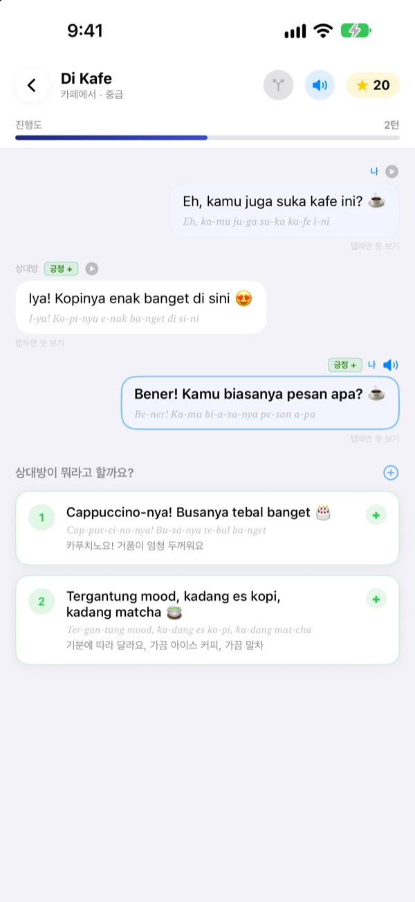
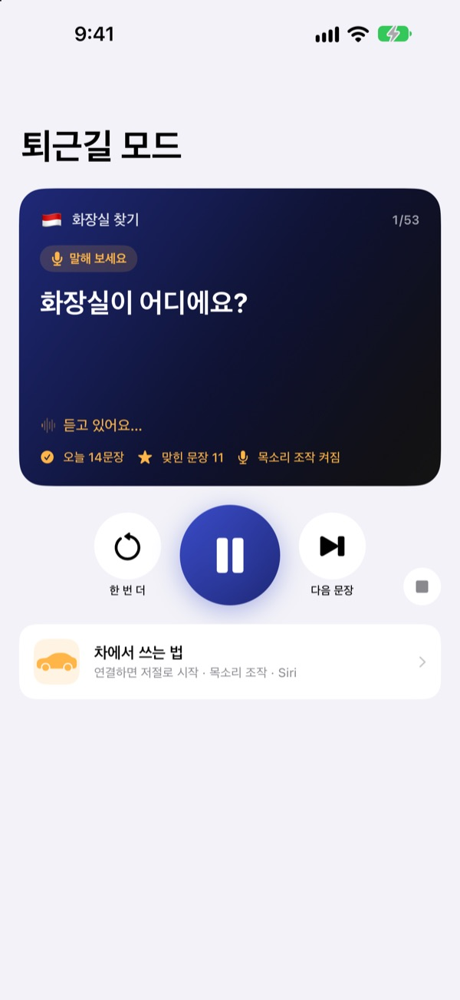
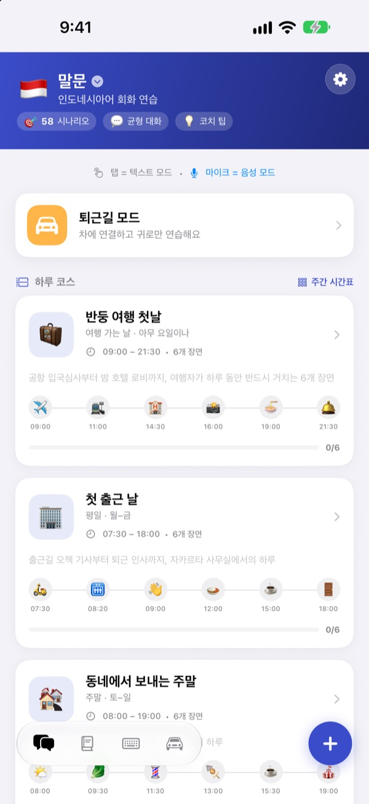
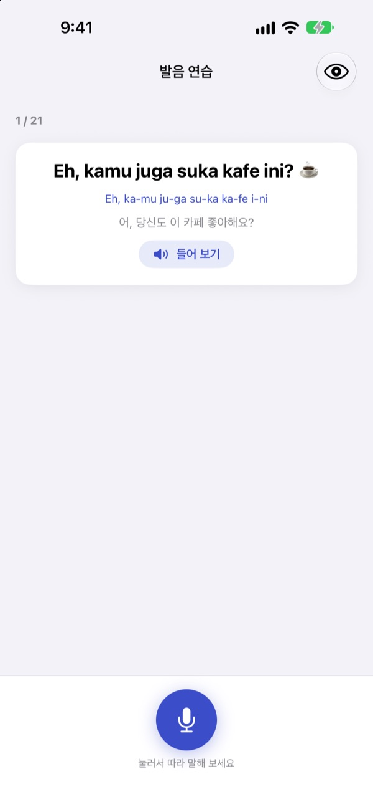

머뭇거리던 한마디,
이제 먼저 꺼냅니다
말문은 내가 고른 답에 따라 대화가 다르게 이어지는 회화 연습 앱입니다. 인도네시아어, 영어, 일본어, 중국어, 스페인어, 한국어 가운데 배울 언어를 고르고, 출퇴근 차 안에서는 화면 없이 귀와 목소리로 연습합니다.
갈래 대화, 발음 연습, 단어장은 무료입니다.

직접 대화를 이어 보세요
앱에 들어 있는 인도네시아어 대화 '아침 인사'입니다. 다음 말을 고를 때마다 대화가 다른 쪽으로 흘러갑니다.
외운 문장은 있는데, 대답이 안 나온 적 있나요?
교재 속 대화는 늘 정해진 대로 흘러가지만, 실제 상대는 예상 밖의 말로 받아칩니다. 말문은 한 대화 안의 여러 갈래를 미리 걸어 보게 해서, 어떤 답이 와도 다음 말을 이어 가게 합니다. 손이 묶인 출퇴근길도 연습 시간이 됩니다.
운전하면서 귀로 연습합니다
퇴근길 모드는 블루투스나 CarPlay로 차 스피커에서 재생됩니다. 뜻을 먼저 들려주고, 알림음이 울리면 말해 볼 시간을 준 뒤, 정답을 천천히 한 번, 보통 속도로 한 번 들려줍니다.
핸들 버튼으로 넘기고 다시 듣고, 내 차례에는 다음, 다시, 천천히처럼 말로도 조작합니다. 내비게이션 안내가 나오면 잠시 멈춥니다.

여행과 생활의 장면이 다 들어 있습니다
언어마다 상황별 회화 53개가 있습니다. 기본 표현과 일상 대화부터 식당, 교통, 공항, 호텔, 쇼핑, 관광, 긴급 상황까지 담았습니다.
인도네시아어에는 직접 만든 스몰토크 5개, 장면 6개짜리 하루 코스 3개와 주간 시간표, 출장에 바로 쓰는 단어 100개가 더 있습니다.

말한 대로 들렸는지 확인합니다
발음 연습은 점수와 함께 맞게 말한 단어와 놓친 단어를 색으로 보여 줍니다.
대본 보기에서는 대화 전체를 메신저처럼 펼쳐 이어 듣고, 뜻을 가린 채 스스로 시험해 볼 수 있습니다.

시작은 세 단계면 됩니다
- 1
배울 언어를 고릅니다
홈 화면 맨 위의 국기를 누르면 바뀝니다. 내 문장과 단어장은 언어마다 따로 저장됩니다.
- 2
대화를 하나 엽니다
답을 눌러 고르면 텍스트 모드, 마이크를 누르고 말하면 가장 가까운 답을 찾아 주는 음성 모드입니다.
- 3
차에서는 퇴근길 모드
폰을 차에 연결하고 재생을 누르면 끝입니다. 화면은 볼 필요가 없습니다.
퇴근길 모드 조작
- 핸들의 다음 곡 버튼
- 다음 문장
- 핸들의 이전 곡 버튼
- 같은 문장 한 번 더
- 재생 버튼
- 멈춤, 다시 재생
다음- 다음 문장
다시·한 번 더- 같은 문장 다시 듣기
천천히·빠르게- 읽어 주는 속도 바꾸기
다음 장면- 다음 대화로 넘어가기
그만·멈춰- 연습 멈추기
- Siri에게 "말문 퇴근길 연습 시작"
- 손대지 않고 시작하기
말로 하는 명령은 딩 소리 뒤 내가 말해 볼 차례에만 듣습니다. 문장을 맞게 말하면 "좋아요!"라고 알려 줍니다. 차 화면에는 지금 문장이 재생 정보로 뜨고, 따로 CarPlay 앱 화면은 없습니다.
거의 다 무료, 더 하려면 말문 Pro
무료
- 갈래 스몰토크와 하루 코스 (인도네시아어)
- 상황별 회화의 기본 표현과 일상 대화
- 퇴근길 모드 하루 3장면
- 발음 연습, 대본 보기, 대화 가져오기, 연습 기록
- 내 문장, 단어 카드, 문장 키보드
- 친구와 시나리오 나누기, AI로 시나리오 만들기
말문 Pro
- 상황별 회화 전체: 식당, 교통, 공항, 호텔, 쇼핑, 관광, 긴급 상황
- 퇴근길 모드 무제한
- 6개 언어 모두에 적용
연간 구독 또는 한 번 결제하는 평생 이용권
가격은 앱 안과 App Store에서 확인하세요. 연간 구독은 기간이 끝나기 24시간 전까지 해지하지 않으면 자동으로 갱신됩니다.
자주 묻는 질문
차에서는 어떻게 쓰나요?
폰을 블루투스나 CarPlay로 차에 연결하고 퇴근길 모드에서 재생을 누르세요. 소리는 차 스피커로 나오고 지금 문장은 '지금 재생 중'에 뜹니다. Siri에게 "말문 퇴근길 연습 시작"이라고 말해도 되고, 단축어 앱 ▸ 자동화에서 CarPlay(또는 차 블루투스)에 연결될 때 '퇴근길 연습 시작'을 실행하도록 한 번 설정해 두면 차에 타자마자 시작됩니다.
말로 조작할 때 마이크가 계속 듣나요?
아니요. 딩 소리 뒤 내가 말해 볼 차례에만 폰 마이크로 듣고, 들은 말은 기기 안에서만 처리합니다. 명령은 앱 화면 언어로 말합니다.
발음이 잘 인식되지 않아요.
음성 인식은 지금 배우는 언어로 동작합니다. 조용한 곳에서 해 보시고, 기기에 그 언어의 음성 인식이 받아져 있는지 확인해 주세요.
배우는 언어는 어떻게 바꾸나요?
홈 화면 맨 위의 국기를 누르세요. 내 문장, 내 시나리오, 단어장은 언어마다 따로 저장됩니다.
키보드는 어떻게 추가하나요?
설정 ▸ 일반 ▸ 키보드 ▸ 키보드 ▸ 새로운 키보드 추가에서 말문 키보드를 고르세요. 글을 쓰다가 지구본 버튼을 누르면 바뀝니다. 전체 접근 허용은 필요 없습니다. 키보드에 나오는 표현은 홈 화면 오른쪽 아래 키보드 아이콘 ▸ 키보드 관리에서 하나씩 끄고 켤 수 있습니다.
친구가 공유한 시나리오가 안 보여요.
친구와 함께 보기는 iCloud로 동작합니다. 두 사람 모두 iCloud에 로그인되어 있어야 하고, 그래도 안 보이면 앱을 완전히 닫았다가 다시 열어 보세요.
AI로 시나리오를 만들려면 무엇이 필요한가요?
내 Anthropic API 키를 앱에 넣고 주제를 적으면 새 대화를 만들어 줍니다. 키가 없어도 다른 기능은 모두 쓸 수 있습니다.
구독을 해지하거나 환불받고 싶어요.
결제는 Apple이 처리합니다. 해지는 iPhone 설정 ▸ Apple 계정 ▸ 구독 ▸ 말문에서 할 수 있고, 환불은 reportaproblem.apple.com에서 Apple에 요청하세요.
기기를 바꿨더니 Pro가 풀렸어요.
같은 Apple 계정으로 로그인한 뒤 말문의 설정 ▸ 말문 Pro ▸ 구매 복원을 누르세요.
제 학습 기록은 어디에 저장되나요?
계정이 필요 없습니다. 학습 기록은 내 기기와 내 iCloud에만 저장되고, 광고와 추적이 없습니다. 앱을 고치기 위한 익명 사용 통계와 오류 진단만 보냅니다. 버그나 기능 요청은 GitHub Issues(github.com/M1zz/IndonesianSmallTalk/issues)에 남겨 주셔도 됩니다.
궁금한 점이나 의견은 leeo@kakao.com로 보내 주세요. 앱의 설정 ▸ 피드백 보내기나 인스타그램 @lee25_ios로도 받습니다.